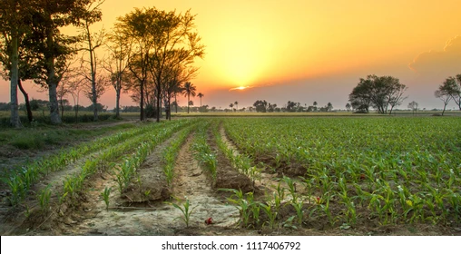

Punjab, Pakistan's most populous and agriculturally fertile province, is known as the country's cultural and economic heartland. Home to the vibrant cities of Lahore, Faisalabad, and Multan, it boasts a rich history spanning ancient civilizations like Harappa, Mughal-era landmarks such as the Badshahi Mosque, and Sufi shrines that attract devotees nationwide. The province's lush fields along the Indus River and its tributaries produce wheat, rice, and cotton, earning it the title of "Pakistan's Breadbasket." Punjab's lively traditions—from Bhangra dance and Punjabi folklore to its flavorful cuisine—reflect a warm, welcoming spirit deeply rooted in its land and people.
